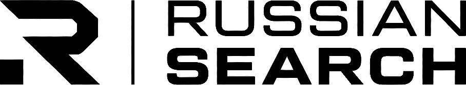

Точность
Каждый вывод опирается на источник, а не на догадку.

Исследуем открытые источники, проверяем цифровые следы и превращаем разрозненные данные в ясную аналитическую картину.
Мы — независимая исследовательская практика, работающая с общедоступной информацией. Сопоставляем источники, проверяем контекст и аккуратно отделяем подтверждённое от вероятного.
Подробнее о нас↗Каждый вывод опирается на источник, а не на догадку.
Совпадение — только начало проверки, не её результат.
Законность, минимизация данных и уважение к приватности.
Подбираем инструменты под задачу, а не задачу под инструменты.
Основные направления работы — Украина, Россия и Беларусь. Запросы по другим странам рассматриваются индивидуально, по предварительному согласованию и договору.
Кратко опишите цель и контекст. Мы оценим возможность, объём и формат работы.